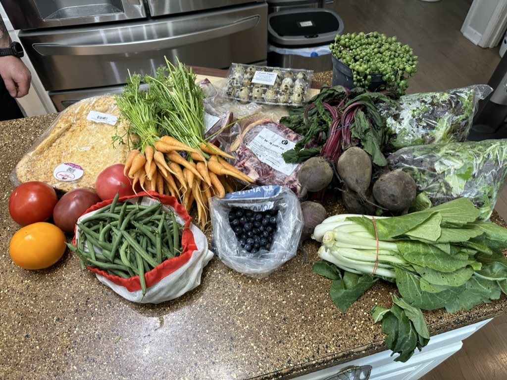

How I eat for my heart
In April 2023, at 39 years old, I had a heart attack. My right coronary artery was 100% blocked. I'd been a smoker since I was 12.
I remember lying in the cath lab, watching my heart die on a monitor while the doctors rushed to place a stent. It was one of the most terrifying moments of my life. It was also one of the most inspiring, because I refuse to let it happen again.
After the emergency angioplasty and my time in the hospital, I had to figure out what living heart-healthy meant to me. I quit smoking, learned everything I could about heart health, and started making the changes I needed to make. Not a crash diet. A balance that makes sense for my life and lets me be the best version of me.
Cardiac rehab
A month after my heart attack, I started cardiac rehab, working out with monitors clipped on while the staff watched every beat. Three months later I'd completed the program, and it showed me my heart could get stronger again.
My rehab therapist, Lucy, was pivotal in helping me cope with the emotional toll and come out the other side a better person. I would not have been nearly as successful without her guidance and friendship.
Rehab got me moving. The kitchen is where I keep it going.
I eat local
I'm a locavore. The environment matters to me, and buying food grown and made close to home is one of the easiest ways I can shrink my carbon footprint. Farm to table, homemade, no fillers.
Farmers markets are my grocery store, and whatever is in season decides what I cook. If it looks good at the market, buy it, then figure out how to make that fresh fruit, those vegetables and that protein work for your diet.
The decisions I make every time I cook
I use a potassium chloride salt substitute instead of regular salt, and I still use it sparingly.
That's where the flavor comes from. I have about 20 different vinegars in my pantry, and each one has its own job.
If I can cut the fat off a piece of meat, it's worth the time and effort.
Avocado oil is my everyday cooking fat. Some dishes still call for olive oil, like Italian food, and I like sesame oil in Korean and other Asian-inspired recipes.
Reduce or skip the hoisin and fish sauce. Cut the soy sauce in half, or add a tangy new vinegar instead.
I avoid refined sugar more than almost anything except salt. For a sweet treat, I reach for fresh fruit first: it satisfies the craving and adds fiber. When a recipe needs more, I use local honey, monk fruit or allulose, never erythritol.
I read every label
I'm not against packaged foods. I just use them smartly, and sparingly when I can. Every label gets checked for the red flags I avoid:
- High sodium. Salt is the first thing I check, and the number I watch the closest.
- Added sugars. If sugar has been added, I want to know how much and why.
- Lots of fat with little protein. That usually means it's more filler than food.
- Refined, high-glycemic carbs. White flour, syrups and starches that spike blood sugar.
If a label is high in any of these, it goes back on the shelf, or I find a way to make it myself.
Find a canned-goods brand that doesn't add salt. So much of that added salt just isn't necessary.
Check the serving size, too. Every number on that label is for one serving, not the whole package. A can of soup or a bag of chips is often two or three servings, so eating the whole thing doubles or triples the sodium, sugar and fat. Sometimes the healthiest change isn't a new food at all. It's eating the actual serving size and saving the rest for later.
Why sugar matters to me
To me, sugar is the new killer in heart disease, and the American Heart Association recommends limiting added sugars. But some sweetness has to be part of life now and then. My first choice is fresh fruit, ideally whatever is in season at the market: berries, peaches, apples. It brings natural sweetness along with fiber, which helps keep cholesterol and blood sugar in check. When I need more than fruit, I use local honey, monk fruit or allulose. I stay away from erythritol. Since 2023, several studies have linked it to heart risk: higher blood levels tied to more heart attacks and strokes, platelets that clot more easily, and a 2025 University of Colorado Boulder study where it made the cells lining blood vessels behave in ways that raise stroke risk. The research is still developing, but for someone with a stent, that's enough for me. Plenty of "monk fruit" and "keto" sweeteners are blended with erythritol, and it can hide on labels under "sugar alcohols," so check the ingredient list.
Your taste buds will catch up
These changes can taste bland at first. Stick with it. You'll adjust to the point where the way you used to eat tastes too salty, too rich and too much.
Small changes become big shifts
You can make big swings to eat heart-healthy, but you don't have to. Make one small change at each meal and turn it into a habit. Those small changes add up to big shifts.

Potassium chloride salt substitutes aren't safe for everyone. If you have kidney disease, or take medicines that raise potassium, such as ACE inhibitors, ARBs or potassium-sparing diuretics, talk to your doctor before using one. That goes for any big change to your diet.